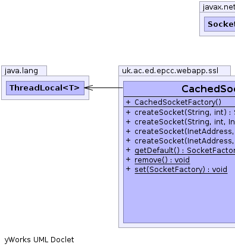
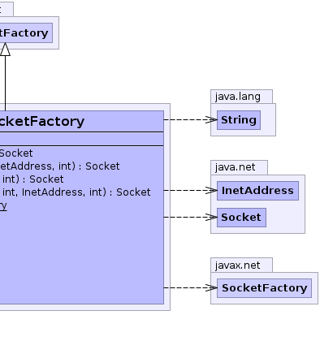

public class CachedSocketFactory
extends javax.net.SocketFactory
SSLService|  |  |
| Constructor and Description |
|---|
CachedSocketFactory() |
| Modifier and Type | Method and Description |
|---|---|
java.net.Socket |
createSocket(java.net.InetAddress host,
int port) |
java.net.Socket |
createSocket(java.net.InetAddress address,
int port,
java.net.InetAddress localAddress,
int localPort) |
java.net.Socket |
createSocket(java.lang.String arg0,
int arg1) |
java.net.Socket |
createSocket(java.lang.String host,
int port,
java.net.InetAddress localHost,
int localPort) |
static javax.net.SocketFactory |
getDefault() |
static void |
remove() |
static void |
set(javax.net.SocketFactory factory) |
public static javax.net.SocketFactory getDefault()
public static void set(javax.net.SocketFactory factory)
public static void remove()
public java.net.Socket createSocket(java.lang.String arg0,
int arg1)
throws java.io.IOException,
java.net.UnknownHostException
createSocket in class javax.net.SocketFactoryjava.io.IOExceptionjava.net.UnknownHostExceptionpublic java.net.Socket createSocket(java.net.InetAddress host,
int port)
throws java.io.IOException
createSocket in class javax.net.SocketFactoryjava.io.IOExceptionpublic java.net.Socket createSocket(java.lang.String host,
int port,
java.net.InetAddress localHost,
int localPort)
throws java.io.IOException,
java.net.UnknownHostException
createSocket in class javax.net.SocketFactoryjava.io.IOExceptionjava.net.UnknownHostExceptionpublic java.net.Socket createSocket(java.net.InetAddress address,
int port,
java.net.InetAddress localAddress,
int localPort)
throws java.io.IOException
createSocket in class javax.net.SocketFactoryjava.io.IOException